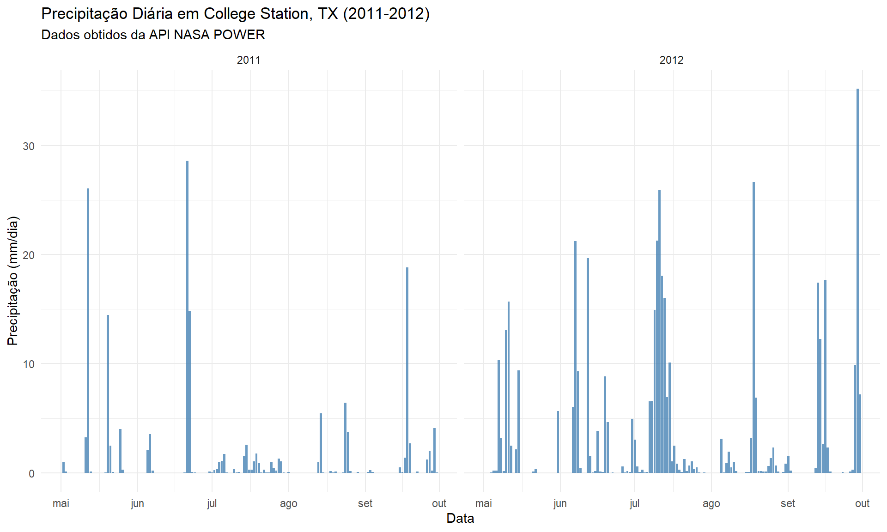
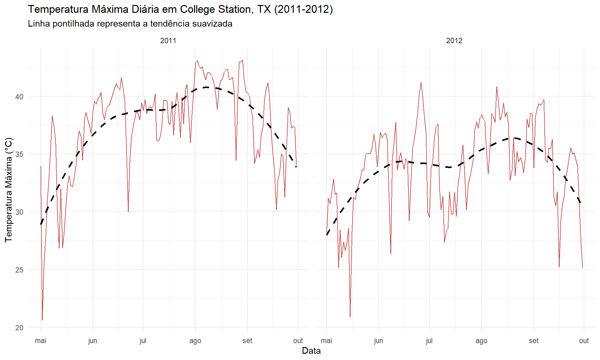

Last updated: 2025-11-03
Checks: 6 1
Knit directory:
Integrating-nir-genomic-kernel/
This reproducible R Markdown analysis was created with workflowr (version 1.7.2). The Checks tab describes the reproducibility checks that were applied when the results were created. The Past versions tab lists the development history.
The R Markdown file has staged changes. To know which version of the
R Markdown file created these results, you’ll want to first commit it to
the Git repo. If you’re still working on the analysis, you can ignore
this warning. When you’re finished, you can run
wflow_publish to commit the R Markdown file and build the
HTML.
Great job! The global environment was empty. Objects defined in the global environment can affect the analysis in your R Markdown file in unknown ways. For reproduciblity it’s best to always run the code in an empty environment.
The command set.seed(20250829) was run prior to running
the code in the R Markdown file. Setting a seed ensures that any results
that rely on randomness, e.g. subsampling or permutations, are
reproducible.
Great job! Recording the operating system, R version, and package versions is critical for reproducibility.
Nice! There were no cached chunks for this analysis, so you can be confident that you successfully produced the results during this run.
Great job! Using relative paths to the files within your workflowr project makes it easier to run your code on other machines.
Great! You are using Git for version control. Tracking code development and connecting the code version to the results is critical for reproducibility.
The results in this page were generated with repository version 80b3304. See the Past versions tab to see a history of the changes made to the R Markdown and HTML files.
Note that you need to be careful to ensure that all relevant files for
the analysis have been committed to Git prior to generating the results
(you can use wflow_publish or
wflow_git_commit). workflowr only checks the R Markdown
file, but you know if there are other scripts or data files that it
depends on. Below is the status of the Git repository when the results
were generated:
Ignored files:
Ignored: .Rhistory
Ignored: .Rproj.user/
Untracked files:
Untracked: analysis/analysis.Rmd
Untracked: analysis/code_NIRS_kernels.R
Untracked: analysis/code_for_GBLUP.R
Untracked: analysis/code_for_GBLUP_pt.R
Untracked: analysis/process_climate_data.Rmd
Untracked: data/Article_documents/
Untracked: data/GAPIT.Genotype.Numerical.txt
Untracked: data/Maize-NIRS-GBS-main/
Untracked: data/NIR.csv
Untracked: data/Pheno.rds
Untracked: output/
Unstaged changes:
Modified: analysis/climate_data.Rmd
Staged changes:
New: analysis/climate_data.Rmd
New: analysis/components_variance.Rmd
Note that any generated files, e.g. HTML, png, CSS, etc., are not included in this status report because it is ok for generated content to have uncommitted changes.
There are no past versions. Publish this analysis with
wflow_publish() to start tracking its development.
Este tutorial detalha o processo de obtenção e processamento de dados climáticos diários para os experimentos de milho no Texas (College Station, TX) realizados em 2011 e 2012.
O objetivo principal deste script não é apenas baixar os dados, mas transformá-los de séries temporais diárias (ex: 150 dias de temperatura) em um conjunto conciso de Covariáveis Ambientais (ECs). Essas ECs (ex: “total de dias de estresse térmico”, “GDD acumulado”, “VPD médio”) quantificam as características macroambientais de cada ano.
Essas ECs são o componente “W” (de Weather, ou Clima) em nossos modelos preditivos (\(G + E + W\)). Elas serão usadas posteriormente para construir uma matriz de parentesco climático (ou kernel, \(K_W\)), que nos permite modelar as interações \(G \times W\) e melhorar a precisão da predição genômica.
Primeiro, carregamos nossa “caixa de ferramentas”. Cada pacote R tem uma função específica:
nasapower: O pacote principal. Ele fornece uma
interface de cliente R para a API NASA POWER, permitindo-nos
baixar dados climáticos globais diretamente para o R.dplyr e lubridate: Nossas ferramentas de
manipulação de dados. dplyr é usado para filtrar, agrupar e
resumir os dados, enquanto lubridate facilita o trabalho
com datas.ggplot2: Usado para a análise exploratória visual,
permitindo-nos “ver” as condições climáticas de cada ano.# Se os pacotes não estiverem instalados, descomente e execute as linhas abaixo
# install.packages("nasapower")
# install.packages("dplyr")
# install.packages("ggplot2")
# install.packages("lubridate")
# Carregar os pacotes
library(nasapower)
library(dplyr)
library(ggplot2)
library(lubridate)Definimos as constantes para nossa consulta à API.
coords_texas: As coordenadas geográficas exatas do
local do experimento.dates: As datas de início e fim da estação de
crescimento do milho para cada ano (Maio a Setembro).params: Os parâmetros climáticos específicos que
solicitamos à NASA. Escolhemos estes porque são os “ingredientes brutos”
necessários para nossas Covariáveis Ambientais (ECs). Por exemplo,
T2M_MAX e T2M_MIN são necessários para
calcular os Graus-Dia Acumulados (GDD), e RH2M é usado para
calcular o Déficit de Pressão de Vapor (VPD).# Coordenadas do local de experimento no Texas
coords_texas <- c(lon = -96.3344, lat = 30.6282)
# Período de interesse (estação de crescimento do milho)
start_date_2011 <- "2011-05-01"
end_date_2011 <- "2011-09-30"
start_date_2012 <- "2012-05-01"
end_date_2012 <- "2012-09-30"
# Parâmetros climáticos a serem baixados
# PRECTOTCORR = Precipitação Total Corrigida (mm/dia)
# T2M_MAX = Temperatura Máxima a 2 metros (°C)
# T2M_MIN = Temperatura Mínima a 2 metros (°C)
# RH2M = Umidade Relativa a 2 metros (%)
params <- c("PRECTOTCORR", "T2M_MAX", "T2M_MIN", "RH2M", # Originais
"ALLSKY_SFC_SW_DWN", # Radiação Solar
"WS2M") # Velocidade do VentoCom nossos parâmetros definidos, usamos a função
get_power() para consultar os servidores da NASA.
Fazemos duas chamadas separadas: uma para a estação de 2011 e outra
para 2012. Em seguida, usamos bind_rows() do
dplyr para empilhar esses dois conjuntos de dados em um
único dataframe (texas_climate_data).
Por fim, convertemos a coluna de data (que vem como
YYYYMMDD) para um formato de data R adequado usando
lubridate::ymd(). Salvamos este arquivo “bruto” como um CSV
para reprodutibilidade, garantindo que não precisemos baixar os dados
novamente.
# Obter dados para Texas 2011
data_tx_2011 <- get_power(
community = "AG",
lonlat = coords_texas,
pars = params,
dates = c(start_date_2011, end_date_2011),
temporal_api = "DAILY"
) %>% mutate(year = 2011)
# Obter dados para Texas 2012
data_tx_2012 <- get_power(
community = "AG",
lonlat = coords_texas,
pars = params,
dates = c(start_date_2012, end_date_2012),
temporal_api = "DAILY"
) %>% mutate(year = 2012)# Combinar os dados do Texas em um único dataframe
texas_climate_data <- bind_rows(data_tx_2011, data_tx_2012)
# Transformar a data para o formato correto e adicionar mês para facilitar a plotagem
texas_climate_data <- texas_climate_data %>%
mutate(date = ymd(YYYYMMDD))
# Visualizar as primeiras linhas da tabela de dados
knitr::kable(head(texas_climate_data), caption = "Amostra dos Dados Climáticos do Texas")| LON | LAT | YEAR | MM | DD | DOY | YYYYMMDD | PRECTOTCORR | T2M_MAX | T2M_MIN | RH2M | ALLSKY_SFC_SW_DWN | WS2M | year | date |
|---|---|---|---|---|---|---|---|---|---|---|---|---|---|---|
| -96.3344 | 30.6282 | 2011 | 5 | 1 | 121 | 2011-05-01 | 0.00 | 33.95 | 16.93 | 66.05 | 18.35 | 4.13 | 2011 | 2011-05-01 |
| -96.3344 | 30.6282 | 2011 | 5 | 2 | 122 | 2011-05-02 | 0.99 | 20.62 | 11.77 | 69.83 | 8.63 | 3.73 | 2011 | 2011-05-02 |
| -96.3344 | 30.6282 | 2011 | 5 | 3 | 123 | 2011-05-03 | 0.14 | 25.13 | 10.30 | 50.50 | 28.29 | 3.67 | 2011 | 2011-05-03 |
| -96.3344 | 30.6282 | 2011 | 5 | 4 | 124 | 2011-05-04 | 0.00 | 27.91 | 9.52 | 36.35 | 28.73 | 1.69 | 2011 | 2011-05-04 |
| -96.3344 | 30.6282 | 2011 | 5 | 5 | 125 | 2011-05-05 | 0.01 | 30.96 | 12.09 | 38.21 | 29.31 | 1.22 | 2011 | 2011-05-05 |
| -96.3344 | 30.6282 | 2011 | 5 | 6 | 126 | 2011-05-06 | 0.00 | 32.76 | 13.95 | 50.22 | 28.19 | 2.39 | 2011 | 2011-05-06 |
# Salvar os dados brutos para referência futura
write.csv(texas_climate_data, "output/climate_results/texas_climate_data_raw.csv", row.names = FALSE)Antes de processar os dados, devemos sempre visualizá-los. Esta etapa de Análise Exploratória de Dados (EDA) é vital para:
Este gráfico nos permite “ver” o estresse hídrico. A diferença entre os dois anos é nítida: 2011 teve precipitação quase nula durante a maior parte da estação de crescimento, confirmando as condições de seca. 2012 teve eventos de chuva mais significativos e distribuídos.
ggplot(texas_climate_data, aes(x = date, y = PRECTOTCORR)) +
geom_bar(stat = "identity", fill = "steelblue", alpha = 0.8) +
facet_wrap(~ year, scales = "free_x") +
labs(
title = "Precipitação Diária em College Station, TX (2011-2012)",
subtitle = "Dados obtidos da API NASA POWER",
x = "Data",
y = "Precipitação (mm/dia)"
) +
theme_minimal() +
scale_x_date(date_labels = "%b", date_breaks = "1 month") # Mostra o mês
ggsave("output/climate_results/precipitation_plot.tiff")Este gráfico nos ajuda a identificar o estresse térmico. Ambos os anos mostram longos períodos de calor extremo (acima de 35°C), mas 2011 parece ter um período de calor intenso mais sustentado. Na próxima seção, quantificaremos isso contando os “dias de estresse térmico”.
ggplot(texas_climate_data, aes(x = date, y = T2M_MAX)) +
geom_line(color = "firebrick", alpha = 0.8) +
geom_smooth(method = "loess", se = FALSE, linetype = "dashed", color = "black") +
facet_wrap(~ year, scales = "free_x") +
labs(
title = "Temperatura Máxima Diária em College Station, TX (2011-2012)",
subtitle = "Linha pontilhada representa a tendência suavizada",
x = "Data",
y = "Temperatura Máxima (°C)"
) +
theme_minimal() +
scale_x_date(date_labels = "%b", date_breaks = "1 month")
ggsave("output/climate_results/temperature_plot.tiff")Esta é a etapa mais crítica do script. Transformamos os dados de séries temporais diárias (~150 linhas por ano) em apenas uma linha por ano, onde cada coluna representa uma característica resumida daquele ambiente.
Primeiro, usamos mutate() para calcular novas métricas
para cada dia:
Em seguida, usamos group_by(year) e
summarise() para agregar essas métricas diárias em
Covariáveis Ambientais (ECs) anuais. Por exemplo:
GDD_CUM: A soma de todos os GDDs diários da
estação.HEAT_STRESS_DAYS: A contagem de dias em que
T2M_MAX > 35.PRECTOT: A soma de toda a precipitação.VPD_AVG: A média do VPD diário ao longo da
estação.O resultado, environmental_covariates, é um
dataframe pequeno (neste caso, 2 linhas x ~20 colunas) que
captura numericamente a essência de cada ambiente. Por fim, juntamos
essas ECs de volta ao dataframe original para manter a estrutura
completa.
# Calcula GDD diário, DTR diário e VPD diário
texas_climate_data <- texas_climate_data %>%
mutate(
# --- Cálculos de Temperatura ---
T_base = 10,
T_upper = 30,
T_eff_min = if_else(T2M_MIN < T_base, T_base, T2M_MIN),
T_eff_max = if_else(T2M_MAX > T_upper, T_upper, T2M_MAX),
T_avg_eff = (T_eff_min + T_eff_max) / 2,
GDD = T_avg_eff - T_base,
DTR = T2M_MAX - T2M_MIN,
T_AVG_DAILY = (T2M_MAX + T2M_MIN) / 2,
# --- CÁLCULO MANUAL DE VPD (O SUBSTITUTO) ---
# 1. Pressão de Saturação de Vapor (e_s) em kPa (usando T_AVG_DAILY)
# (Fórmula de Tetens)
SAT_VAP_PRES = 0.6108 * exp((17.27 * T_AVG_DAILY) / (T_AVG_DAILY + 237.3)),
# 2. Pressão de Vapor Atual (e_a) em kPa (usando RH2M)
ACT_VAP_PRES = SAT_VAP_PRES * (RH2M / 100),
# 3. Déficit de Pressão de Vapor (VPD) diário
VPD_DAILY = SAT_VAP_PRES - ACT_VAP_PRES
)
# Agrega os dados por ano para criar as ECs
# Este é o dataframe final que será usado para construir o kernel W
environmental_covariates <- texas_climate_data %>%
group_by(year) %>%
summarise(
# Covariáveis de Temperatura (Originais)
TMAX_AVG = mean(T2M_MAX, na.rm = TRUE),
TMIN_AVG = mean(T2M_MIN, na.rm = TRUE),
GDD_CUM = sum(GDD, na.rm = TRUE),
HEAT_STRESS_DAYS = sum(T2M_MAX > 35, na.rm = TRUE),
# Covariáveis Hídricas (Originais)
PRECTOT = sum(PRECTOTCORR, na.rm = TRUE),
DRY_DAYS = sum(PRECTOTCORR == 0, na.rm = TRUE),
RH_AVG = mean(RH2M, na.rm = TRUE),
# Vento e Radiação (Originais)
WS2M_AVG = mean(WS2M, na.rm = TRUE),
RAD_CUM = sum(ALLSKY_SFC_SW_DWN, na.rm = TRUE),
# Covariáveis de Temperatura (Adicionais)
T_AVG = mean(T_AVG_DAILY, na.rm = TRUE),
DTR_AVG = mean(DTR, na.rm = TRUE),
COLD_STRESS_DAYS = sum(T2M_MIN < 10, na.rm = TRUE),
# Covariáveis Hídricas (Adicionais)
RAINY_DAYS = sum(PRECTOTCORR > 0, na.rm = TRUE),
PREC_INTENSITY = ifelse(RAINY_DAYS > 0, PRECTOT / RAINY_DAYS, 0),
LOW_RH_DAYS = sum(RH2M < 30, na.rm = TRUE),
# --- NOVAS ECs (SUBSTITUTOS DE VPD/PET) ---
VPD_AVG = mean(VPD_DAILY, na.rm = TRUE),
VPD_STRESS_DAYS = sum(VPD_DAILY > 1.5, na.rm = TRUE), # Limiar de 1.5 kPa
.groups = 'drop'
)
# Replica as linhas para cada combinação de manejo hídrico (WS e WW)
# No seu modelo, a diferença WS/WW já é capturada pelo efeito de ambiente (E)
# As ECs representam o "macro-ambiente" (ano).
ecs_final <- texas_climate_data %>%
full_join(environmental_covariates)
# Visualiza as covariáveis finais
head(ecs_final)Finalmente, salvamos nosso dataframe agregado
ecs_final em um arquivo CSV.
Este arquivo é o produto final deste script. Ele será carregado pelo script principal da análise (não mostrado aqui) para construir a matriz de parentesco climático (Kernel W), que quantifica a similaridade entre os ambientes (anos) com base em seus perfis climáticos.
# Garante que a pasta 'output/climate_results' exista
if (!dir.exists("output/climate_results")) dir.create("output/climate_results")
# Salva o arquivo de *covariáveis agregadas*
write.csv(ecs_final, "output/climate_results/environmental_covariates.csv", row.names = FALSE)
cat("Arquivo 'environmental_covariates.csv' salvo com sucesso na pasta 'output/climate_results'!")Arquivo 'environmental_covariates.csv' salvo com sucesso na pasta 'output/climate_results'!
sessionInfo()R version 4.5.1 (2025-06-13 ucrt)
Platform: x86_64-w64-mingw32/x64
Running under: Windows 11 x64 (build 26200)
Matrix products: default
LAPACK version 3.12.1
locale:
[1] LC_COLLATE=Portuguese_Brazil.utf8 LC_CTYPE=Portuguese_Brazil.utf8
[3] LC_MONETARY=Portuguese_Brazil.utf8 LC_NUMERIC=C
[5] LC_TIME=Portuguese_Brazil.utf8
time zone: America/Sao_Paulo
tzcode source: internal
attached base packages:
[1] stats graphics grDevices utils datasets methods base
other attached packages:
[1] lubridate_1.9.4 ggplot2_4.0.0 dplyr_1.1.4 nasapower_4.2.5
[5] workflowr_1.7.2
loaded via a namespace (and not attached):
[1] gtable_0.3.6 xfun_0.53 bslib_0.9.0 processx_3.8.6
[5] lattice_0.22-7 callr_3.7.6 tzdb_0.5.0 vctrs_0.6.5
[9] tools_4.5.1 ps_1.9.1 generics_0.1.4 curl_7.0.0
[13] parallel_4.5.1 tibble_3.3.0 pkgconfig_2.0.3 Matrix_1.7-3
[17] RColorBrewer_1.1-3 S7_0.2.0 lifecycle_1.0.4 compiler_4.5.1
[21] farver_2.1.2 stringr_1.5.2 git2r_0.36.2 textshaping_1.0.3
[25] getPass_0.2-4 httpuv_1.6.16 htmltools_0.5.8.1 sass_0.4.10
[29] yaml_2.3.10 later_1.4.4 pillar_1.11.1 crayon_1.5.3
[33] jquerylib_0.1.4 whisker_0.4.1 cachem_1.1.0 nlme_3.1-168
[37] tidyselect_1.2.1 digest_0.6.37 stringi_1.8.7 splines_4.5.1
[41] labeling_0.4.3 rprojroot_2.1.1 fastmap_1.2.0 grid_4.5.1
[45] cli_3.6.5 magrittr_2.0.4 triebeard_0.4.1 crul_1.6.0
[49] readr_2.1.5 withr_3.0.2 scales_1.4.0 promises_1.3.3
[53] bit64_4.6.0-1 timechange_0.3.0 rmarkdown_2.29 httr_1.4.7
[57] bit_4.6.0 ragg_1.5.0 hms_1.1.3 evaluate_1.0.5
[61] knitr_1.50 mgcv_1.9-3 rlang_1.1.6 urltools_1.7.3.1
[65] Rcpp_1.1.0 glue_1.8.0 httpcode_0.3.0 rstudioapi_0.17.1
[69] vroom_1.6.5 jsonlite_2.0.0 R6_2.6.1 systemfonts_1.2.3
[73] fs_1.6.6 Weverton Gomes da Costa, Pós-Doutorando, Departamento de Estatística - Universidade Federal de Viçosa, wevertonufv@gmail.com↩︎